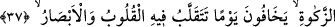
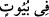
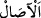
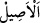
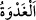
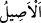

İmam Râğıb der ki: “ (yükseltmek) kelimesi, bazen “Tûr dağını üzerinize
kaldırdık” (el-Bakara, 2/63) âyetinde olduğu gibi bulunduğu yerden kaldırılıp
yükseltilen cisimler hakkında, bazen “Bir zamanlar İbrâhîm, Beytullah’ın
temellerini yükseltiyor…” (el-Bakara, 2/127) âyetindeki gibi binâyı yükseltmek
hakkında, “Senin şânını ve ününü yüceltmedik mi?” (el-İnşirâh, 94/4) âyetindeki gibi
yüceltilen zikir, şan ve şeref hakkında ve “Allah, kiminizi kiminizden derecelerle
üstün kıldı.” (el-En‘âm, 6/165) âyetinde kullanıldığı üzere üstün kılınan mevki/konum
hakkında kullanılmaktadır.
Allah Teâlâ’nın ismi, zâtına nazaran veya Kuddûs gibi selbî sıfatlarından veya Alîm
gibi sübûtî sıfatlarından yahut Hâlık gibi fiilî sıfatlarından bir sıfat olmak üzere O’nun
adlandırılması câiz olan isimlerdir. Fakat bazı âlimlere göre Allah’ın isimleri
tevkîfîdir. “Allah’ın isminin anılması”; tevhid, Kur’an tilâveti, şer’î ilimleri müzâkere,
ezan ve kâmet gibi bütün zikir çeşitlerini kapsamaktadır. Yâni orada zikir ve namazla
meşgul olmak, dünya kelâmı ve mâlâyanî sözlerden uzak durmak gerekir. Bir rivâyette
şöyle buyrulmuştur: “Mescidde (mâlâyani) konuşmak, hayvanların kuru otu yiyip
bitirdiği gibi iyilikleri yer bitirir.”[172]
“Orada sabah akşam O’nu (öyle kimseler) tesbih eder ki;” Burada “ ifâdesi,
tekid ve hatırlatma için âyetin başında zikredilen “ sözünün tekrarıdır. Yine onun
öne alınması, tesbihin sadece bu evlerde olabileceğini ifâde için değil ona verilen
önemden olduğunu bildirmek içindir.
Tesbîh, Allah Teâlâ’yı noksan sıfatlardan tenzîh etmektir. Aslı Allah’a ibâdette hızlı
geçmek/olmak anlamındadır. Çünkü “, suda veya havada hızlı geçmek demektir.
Tesbîh söz, fiil ve niyete bağlı bütün ibâdetler için kullanılan genel bir ifâdedir. Burada
onunla farz olan namazlar kasdetilmiştir. Nitekim “sabah ve akşam” ifâdeleriyle
vakitlerin tayini, bunu haber vermektedir.
“den maksad, sabah vakti edâ edilen namazın vaktidir. “dan maksad da
öğle, ikindi, akşam ve yatsı namazlarının vakitleridir. Çünkü “ onların hepsini bir
araya getirir ve onlara şâmildir. Nitekim el-Kevâşî’de ve diğer bazı eserlerde böyle
geçmektedir. “ sabah vaktine girmek anlamında bir masdardır. Sabah namazı ile
sabah vaktine girmek anlamında bir masdardır. Sabah namazı ile
güneşin doğumu arasındaki vakte “ denir. “, güneşin zevâlinden fecrin
doğumuna kadar olan zamandır.
37. Onlar, ne ticâret ne de alış-verişin kendilerini Allah’ı anmaktan, namaz